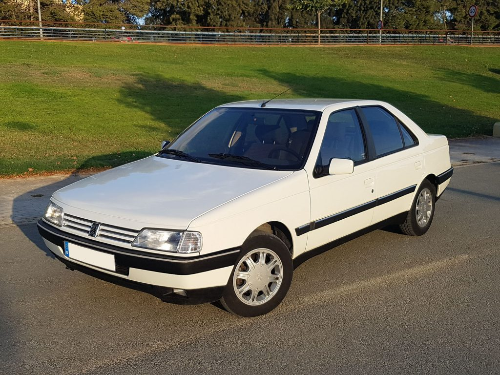
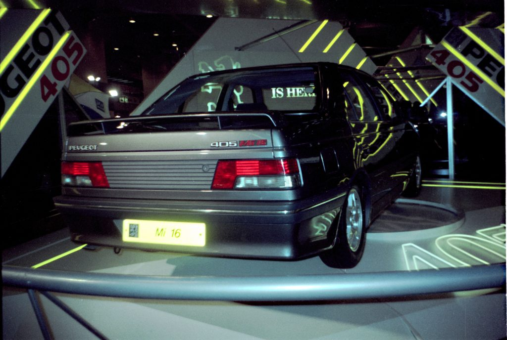
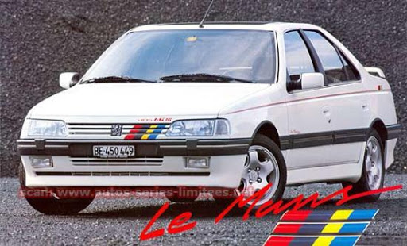
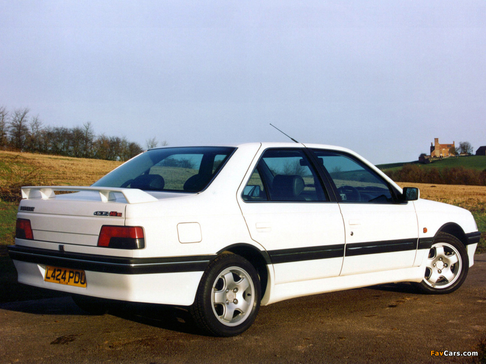
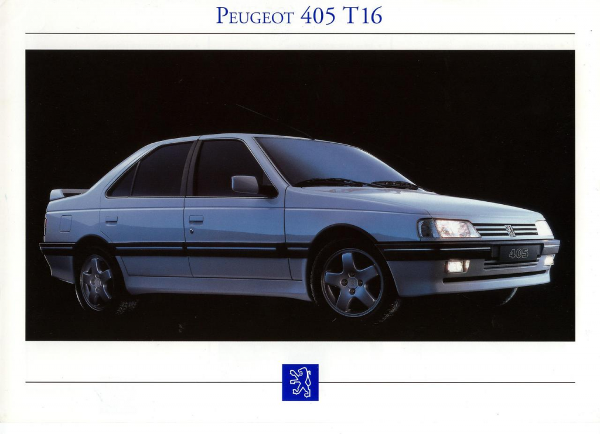
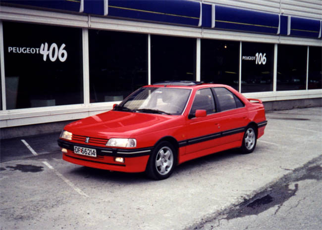

Historia del 405
En marzo de 1987 fue presentado el Peugeot 405, fruto de la colaboración entre la marca de automóviles y el estudio del diseñador Sergio Pininfarina ( que ya había creado otros modelos de Peugeot) primero en versión sedán, y en mayo del año siguiente en versión familiar denominada 405 Break. En 1988 fue designado Coche del Año en Europa, imponiéndose al Citroën AX y a a la tercera generación del Honda Prelude.
Originalmente, los primeros 405 ofrecidos por Peugeot eran las versiones GL, GR, SRI y Mi16. El GL era el modelo más básico, que montaba con un motor 1.4 de 65 CV y 4 velocidades, que pronto se ofreció también uno 1.6 de mayor potencia, el mismo montado en el GR. El SRI era el primero en montar motor de inyección, un 1.9 de 125 CV.
La versión deportiva de la gama 405 fue el Mi16, que poseía un motor 1.9 similar al del SRI, pero de 16 válvulas e inyección multipunto Bosch, alcanzando los 160 CV, aunque debido a las normativas antipolución de algunos países (como EE.UU. o Japón) se creó una variante que incluía un escape con catalizador, que reducía las emisiones pero bajaba su potencia hasta 145 CV. Estéticamente, el Mi16 se caracterizaba por un aspecto más deportivo, con alerón trasero, paragolpes más voluminosos, taloneras laterales, llantas de aleación (primero de 14 y posteriormente de 15 pulgadas) y asientos y volante deportivos, todo de serie. Además, fue el primero de la gama en incluir un primitivo sistema de frenos ABS.
Un año después, en marzo de 1988, llegaron las motorizaciones diésel, una atmosférica (1.9 de 69 CV) y otra turbo (1.8 de 90 CV), aplicándose a toda la gama con las denominaciones GLD, GRD, GRDturbo y SRDturbo. Además se presentó también como opción la caja de cambios automática. Ya en 1989, se presentan las versiones de tracción integral a las 4 ruedas, GRx4 y SRx4, a las que se uniría en 1990 la versión deportiva Mi16x4 que incluía diferenciales autoblocantes (Ferguson en el grupo central/delantero y Torsen en trasero). Además, estas versiones equipaban en el eje trasero una suspensión hidroneumática autonivelante, fabricada por Citroën, para asegurarse que se mantenía a la altura correcta del eje en todo momento y proteger el diferencial trasero de posibles golpes.

En mayo de 1991 sale a la luz la primera serie especial: el 405 Roland Garros, una versión Break limitada a 400 unidades con motivo del patrocinio de Peugeot en el conocido evento deportivo. Se vendía solo en color verde oscuro (llamado verde sorrento), con el motor 1.9 de 125 CV, techo solar eléctrico y tapicería de cuero blanco, entre otros extras. El mismo año comienza a venderse en Suiza el Mi16 Collection, y al año siguiente el SRI Suisse, disponibles solo en color gris magnum metalizado y verde sorrento respectivamente, igual a los de serie pero incluyendo todos los extras, como lavafaros, tapicería de cuero y ABS. En España se lanza el GTX, una versión deportiva del SRI, con llantas de aleación de 14 pulgadas, alerón, volante y tapicería deportiva en el interior.
Para celebrar la victoria de Peugeot en las 24 Horas de Le Mans en 1992, Peugeot Suiza comercializó el Mi16 Le Mans, una serie limitada en color blanco solo diferenciable de la versión normal por los logotipos de «Le Mans» y por incluir todos los extras de serie. También en ese año se lanzó en Bélgica la versión Quartz solo disponible en sedán y en tres colores grises.
La serie ST fue la última en aparecer, como una versión mejorada del SR, con motor de inyección o turbo diésel. En su interior podíamos encontrar un salpicadero decorado con madera, que era su principal característica.
A mediados del año 1992 se realiza una renovación del 405. Para acabar con los vehículos ya fabricados se realizan las denominadas series de «fin de carrera» organizados en 2 gamas con denominación Style (baja) y Exclusive (alta). Consistían en series que incluían mayor equipamiento pero con un menor precio. De esta forma se concluyó la primera fase del Peugeot 405.
Rediseño
A finales del año 91, se presenta la nueva generación del 405, con un interior completamente renovado y con grandes novedades en las motorizaciones, que comenzaría a venderse tras el verano de 1992.
Exteriormente, en la versión sedán se aprecia un nuevo sector trasero, con la tapa del maletero que abre a la altura del paragolpes para mayor comodidad y pilotos más pequeños y oscuros. En el interior encontrábamos un salpicadero totalmente nuevo, más redondeado. Gran parte de ese trabajo lo realizó el diseñador Paul Bracq, el mismo que diseñó los interiores de los Peugeot 505 y 205.
El mayor cambio en la gama lo encontramos en la versión ST, que asemejándose al Mi16, al emplear los mismos paragolpes y molduras, el alerón, el volante de cuero, e incluyendo otros extras como faros y asientos de cuero, ambos regulables eléctricamente, además de continuar con las decoraciones en madera.
En lo que corresponde a motorizaciones, gran parte de la gama incorpora inyección electrónica y catalizador para poder cumplir la nueva regulación antipolución Euro de 1993, aumentando la cilindrada de los motores 1.9 a 2.0 para compensar la pérdida de potencia. También se incorpora un motor 1.8 que gracias a la inyección Magneti Marelli, que lograba 103 CV a pesar del catalizador. El motor 1.6 también recibe la inyección electrónica y catalizador, con 89 CV de potencia máxima, y el TU3 1.4 quedó como única alternativa a carburador, pasando de 65 a 75 CV.
En la gama diésel, encontramos que el XUD9 continua ofreciéndose entre los diésel atmosféricos para la gama GL y GR. Como gran novedad se presenta el motor turbo diésel 1.9 con 92 CV reemplazando al 1.7 anterior, ofreciéndose en la gama GR, SR y ST. Además, la nomenclatura para este último se abrevia, cambiando de «Dturbo» a simplemente DT.
En las versiones deportivas encontramos que el Mi16 recibe la motorización XU10J4, un 2.0 16v de 155 CV, y como estrella de la gama sustituyendo al Mi16x4, en 1993 se presenta el 405 T16, también con tracción integral y suspensión trasera hidroneumática, que se convirtió en la versión más codiciada, al unir la deportividad del Mi16 y el lujo de la gama ST, junto a un motor de muy altas prestaciones.
Comercializado para cumplir las reglas de homologación de la FIA para la versión de competición, el T16 llevaba bajo el capó el mismo motor de 2.0 del Mi16 pero turboalimentado (XU10J4TE) alcanzando la cifra de 200 CV de potencia. Además, con gracias al sistema «Overboost», al acelerar a fondo la centralita electrónica forzaba la presión del turbo de 1.1 a 1.3 bares, consiguiendo así 220 CV durante un máximo de 45 segundos, aunque para ello había que cumplir algunos requisitos (circular en una marcha superior 1º y que la temperatura del motor fuera superior a 80°C)5. Otras características eran los frenos ABS, las llantas de aleación de 16′ y asientos de cuero alcántara.
En 1993 una nueva serie especial belga salió a la calle, el 405 Furia, una reedición de la serie especial del año anterior Quartz. Y una nueva victoria en las 24 Horas de Le Mans dio lugar a la serie 405 Le Mans, limitada a 150 unidades en Suiza, un Mi16 con todos los extras, disponible solo en rojo Lucifer metalizado, con el logotipo en distintas partes de la carrocería y asientos tapizados en cuero.
1994 fue un año en el que se fabricaron tres series especiales. El 405 Exclusive estaba solo disponible con las motorizaciones más altas y disponible en cualquier color metalizado. Haciendo referencia a la célebre plaza parisina y a sus joyeros, el 405 Vendôme era la versión de lujo, encargada de hacer tener paciencia una clientela exigente antes del lanzamiento del 406, con tapicería de terciopelo, decoración interior de imitación de madera de nogal, airbag de conductor y por primera vez tercera luz de freno. El 405 Husky fue la última serie limitada, una versión sedán en color azul metalizado. Por último, en 1995 se volvió a poner a la venta en Suiza el SRI Suisse, con la estética de un Mi16.
1994 fue un año en el que se fabricaron tres series especiales. El 405 Exclusive estaba solo disponible con las motorizaciones más altas y disponible en cualquier color metalizado. Haciendo referencia a la célebre plaza parisina y a sus joyeros, el 405 Vendôme era la versión de lujo, encargada de hacer tener paciencia una clientela exigente antes del lanzamiento del 406, con tapicería de terciopelo, decoración interior de imitación de madera de nogal, airbag de conductor y por primera vez tercera luz de freno. El 405 Husky fue la última serie limitada, una versión sedán en color azul metalizado. Por último, en 1995 se volvió a poner a la venta en Suiza el SRI Suisse, con la estética de un Mi16.
Ya en 1996 cesa la producción del 405 sedán en Francia, siendo reemplazado por el novedoso Peugeot 406, y finalmente en 1997 cesa también la de la versión familiar Break, poniendo fin a 10 años de fabricación del 405.
 Ver los modelos!